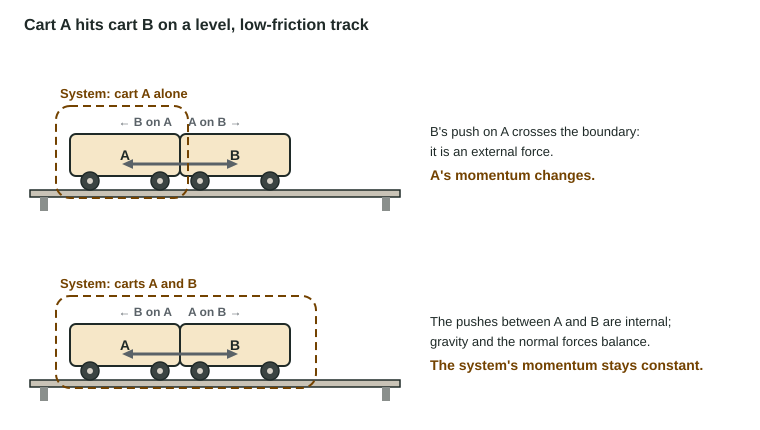

Conservation of Linear Momentum
Internal forces cancel in pairs, so only external forces change a system's momentum.
Part 1 · Hook
Why this matters
Part 2 · Before you start
What this builds on
Part 3 · Prerequisite check
Quick check before you start
1. Newton's third law says the force A exerts on B is
- equal in size and opposite to the force B exerts on A
- larger when A is heavier
- always zero
- in the same direction as B on A
Show the answer
Third-law pairs are equal and opposite.
- Correct: equal in size and opposite to the force B exerts on A:
- larger when A is heavier:
- always zero:
- in the same direction as B on A:
2. Impulse equals
- the change in momentum
- the momentum
- the change in kinetic energy
- force divided by time
Show the answer
J = Δp.
- Correct: the change in momentum:
- the momentum:
- the change in kinetic energy:
- force divided by time:
3. The velocity of a system's center of mass is
- Σp/Σm
- the average of the speeds
- Σm/Σp
- the fastest object's velocity
Show the answer
v_cm = total momentum / total mass.
- Correct: Σp/Σm:
- the average of the speeds:
- Σm/Σp:
- the fastest object's velocity:
Part 4 · See it
See it first

Part 5 · Step by step
How it works, step by step
- Two objects in a system push on each otherthe third law makes the forces, and their impulses, equal and opposite
- The internal impulses are equal and oppositeone object's momentum gain is the other's loss, so internal forces cannot change the total
- The net external force on the system is zerothe system's total momentum, and its center of mass's velocity, stay constant
- An object is left out of the systemits forces become external and the system's momentum can change
Part 6 · Key ideas
Key ideas
- Internal forces come in third-law pairs, so their impulses cancel: they move momentum between parts but never change the total.
- Conservation of momentum: when the net external force on a system is zero, its total momentum is constant: Σp_before = Σp_after.
- The choice of system decides whether momentum is constant. A cart alone in a collision is not; both carts together are.
- With no net external force, the center of mass moves at constant velocity, whatever the parts do.
- Justify with the condition: "the net external force on the two-cart system is zero", never "because momentum is conserved".
Part 7 · Misconception
A common mistake
The wrong idea: Momentum is constant because of conservation of momentum.
What actually happens: Momentum is constant for a system on which the net external force is zero. Name the system and say why the external forces add to zero (they balance, or are negligible during a brief collision).
Part 8 · Check yourself
Check yourself
Exam-style questions. Anything you miss goes into your review queue.
Diagram
Cart A hits cart B
The track is level and friction is negligible. Positive is to the right.
1. What is cart B's velocity after the collision, in m/s?
Type a number in m/s.
Show the answer
System: both carts. External forces (gravity, normal) balance and friction is negligible, so p is constant: (0.50)(0.80) = (0.50)(0.30) + (0.25)v_B, giving v_B = +1.0 m/s.
- Answer: 1.0 m/s
2. Which is the best justification for using momentum conservation here?
- The net external force on the two carts is zero: vertical forces balance and friction is negligible
- Momentum is conserved because of the law of conservation of momentum, which holds for any collision
- The carts exert equal forces on each other, so each cart's momentum is constant
- Kinetic energy is conserved in the collision, so momentum is conserved as well
Show the answer
A system's momentum is constant when the net external force on it is zero. State the system and why the external forces add to zero.
- Correct: The net external force on the two carts is zero: vertical forces balance and friction is negligible: Right: it names the system and the condition.
- Momentum is conserved because of the law of conservation of momentum, which holds for any collision: Circular: it states the law without the condition that makes it apply.
- The carts exert equal forces on each other, so each cart's momentum is constant: Each cart's momentum changes. The equal and opposite forces make the changes cancel in the total.
- Kinetic energy is conserved in the collision, so momentum is conserved as well: Momentum does not follow from kinetic energy; and K need not be conserved here.
3. How does the impulse cart A exerts on cart B compare with the impulse cart B exerts on cart A?
- B's impulse on A is larger, because A is heavier
- Equal in size and opposite in direction
- A's impulse on B is larger, because B speeds up more
- Equal in size and in the same direction
Show the answer
Δp_A = (0.50)(0.30 − 0.80) = −0.25 kg·m/s; Δp_B = (0.25)(1.0 − 0) = +0.25 kg·m/s. Equal and opposite, so the total is unchanged.
- B's impulse on A is larger, because A is heavier: Third-law forces are equal regardless of the masses.
- Correct: Equal in size and opposite in direction: Right: the forces are a third-law pair acting for the same time.
- A's impulse on B is larger, because B speeds up more: B's larger velocity change comes from its smaller mass, not from a larger impulse.
- Equal in size and in the same direction: Third-law forces point in opposite directions.
4. Take cart A alone as the system. Which is correct?
- A's momentum is constant, because the track is frictionless
- A's momentum is constant, because the collision is brief
- A's momentum is not constant, because B exerts an external force on it
- A has no momentum after the collision, since its momentum went to B
Show the answer
Whether momentum is constant depends on the system. Cart A alone feels B's external push; the two-cart system does not.
- A's momentum is constant, because the track is frictionless: Friction is not the only external force. B's push on A changes A's momentum.
- A's momentum is constant, because the collision is brief: Brief or not, B's push gives A an impulse of −0.25 N·s.
- Correct: A's momentum is not constant, because B exerts an external force on it: Right: with B outside the system, B's push is external.
- A has no momentum after the collision, since its momentum went to B: A still moves at 0.30 m/s, so p_A = 0.15 kg·m/s.
5. How does the velocity of the center of mass of the two carts after the collision compare with before?
- It increases, because B speeds up
- It decreases, because A slows down
- It is zero after the collision
- It is the same, about +0.53 m/s
Show the answer
v_cm = (0.40 kg·m/s)/(0.75 kg) = 0.53 m/s both times. With no net external force, the center of mass keeps a constant velocity.
- It increases, because B speeds up: A slows down by the matching amount of momentum; the total is unchanged.
- It decreases, because A slows down: B gains exactly the momentum A loses.
- It is zero after the collision: The total momentum is still 0.40 kg·m/s, not zero.
- Correct: It is the same, about +0.53 m/s: Right: v_cm = Σp/Σm = 0.40/0.75 before and after.
6. A 60. kg skater at rest throws a 3.0 kg ball forward at 8.0 m/s on frictionless ice. What is the skater's recoil speed, in m/s?
Type a number in m/s.
Show the answer
Starting p = 0: 0 = (3.0)(8.0) + (60.)v, so v = −0.40 m/s, a speed of 0.40 m/s backward.
- Answer: 0.40 m/s
Part 9 · Summary
Summary
Part 10 · Up next
What comes next
Part 11 · Connections